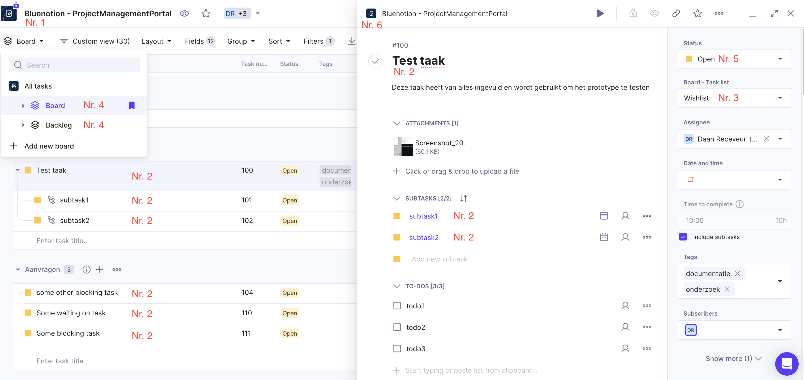

Functioneel ontwerp Project Management Portal
Dit document dient als toelichting op de functionele eisen van het Product Management Portal. Na het doornemen van dit document dienen alle betrokken partijen een duidelijk beeld te hebben van precies wat het opgeleverde Project Management Portal functioneel kan.
Aannames en afhankelijkheden
De actuele technische aspecten van het systeem zijn vastgelegd in het Technisch ontwerp. Voor het vaststellen van de functionele eisen zijn binnen dit document de volgende technische aannames gedaan:
- De API van Productive.io Kan alle door de klant gewenste informatie aanleveren.
Domein
In dit hoofdstuk wordt toelichting gegeven op het domein waarin het systeem zich bevind. Aangezien het PMP zal functioneren als koppeling tussen de klant en het Productive systeem van Bluenotion is het onderstaande domeinmodel ingedeeld in concepten binnen Productive en concepten binnen Bluenotion (aangeduid in het vak Project management portal). Hierdoor wordt de data die het PMP verwacht van Productive in een vroeg stadium vastgelegd en de afhankelijkheid op deze data aangegeven. Voor de data die aangegeven staat in het PMP vak zijn binnen Bluenotion op het moment geen gestandaardiseerde of geautomatiseerde procedures over wie dit wanneer waar aangeeft. Ter toelichting op het domeinmodel zijn onderstaand een voorbeeld van data uit Productive en een tabel met korte omschrijvingen van de entiteiten toegevoegd.

Toelichting domeinmodel
| Entiteit | Uitleg | Gebruik |
|---|---|---|
| Productive (groepering) | De entiteiten binnen de Productive groepering bestaan de huidige staat van het systeem binnen de Bluenotion Productive.io omgeving. | Bovenstaand diagram |
| Project management portal (groepering) | De entiteiten binnen de PMP groepering zijn gebaseerd op de Bluenotion workflow en de bijbehorende service level agreements. Deze entiteiten hebben geen al bestaande data in de Productive omgeving. | Bovenstaand diagram |
| Project | Een stuk software dat een Klant wilt laten ontwikkelen door Bluenotion. | FR1.1 |
| Klant | Een individu of organisatie die bij Bluenotion een of meer projecten heeft lopen bij Bluenotion | FR1.1 |
| Aanvraag/ticket | Iets dat de klant wil in zijn/haar project. Dit is meestal een doorontwikkeling, incident of servicevraag. | FR3.1 |
| Taak | Een Aanvraag waar een PM of TL goedkeuring voor heeft gegeven voor ontwikkeling. Dit kunnen nieuwe functionaliteiten en bugfixes zijn. Toelichting over de lifecycle van taken is hier onder te vinden. | FR3.1 |
| Bord | Een bord waar intern voor Bluenotion taken op worden bijgehouden. Zie lifecycle taken voor meer informatie. | FR3.1 |
| Team | Een representatie van de rollen en beschikbare kennis binnen Bluenotion die worden gebruikt voor het toekennen van de juiste taak aan de juiste werknemers. (UX, FE, BE) | FR8.2 |
| Werknemer | Een werknemer van Bluenotion die aan taken werkt en de status hiervan bijhoudt in Productive. | NFR2 |
| SLA | Een klant heeft een aantal afspraken voor een project vaststaan in een Service Level Agreement waar KPI's zijn vastgelegd die leidend zijn in de prioriteit en het type van een taak. | FR3.3 |
| Taak type | Het soort taak, afhankelijk van de SLA met de klant. | FR3.3 |
| Doorontwikkeling (Taak type) | Een verzoek tot aanpassen van iets binnen de software. Doorgaans komen deze wijzigingen neer op doorontwikkelingen van de software. | FR3.3 |
| Servicevraag (Taak type) | Een vraag die een klant heeft over de software waar geen verdere ontwikkeling voor nodig is. | |
| Incident (Taak type) | Het substantieel niet voldoen van de applicatie aan de overeengekomen specificaties alsmede de situatie waarin sprake is van niet-Beschikbaarheid die niet het gevolg is van onderhoud. | FR3.3 |
| Urgentie | De spoedeisendheid van een incident voor de klant, welke bepaald moet worden aan de hand van het overzicht zoals vastgesteld in het SLA volgens de volgende tabel | FR3.3 |
| Impact | De (ernst van de) gevolgen van een incident voor de klant, welke bepaald moet worden aan de hand van het overzicht zoals vastgesteld in het SLA volgens de volgende tabel | FR3.3 |
| Prioriteit | De prioriteit van de taak, afhankelijk van of mensen nog kunnen werken en de wensen van de klant, welke bepaald moet worden aan de hand van het overzicht zoals vastgesteld in het SLA volgens de volgende tabel | FR3.3 FR4.2 |
| Status (Taak) | De status van een taak geeft aan in welk deel van het development proces een taak zich bevindt. Voorbeelden zijn Not started, Open en Closed. |
Lifecycle aanvragen
Binnen de huidige situatie gaan een PM en externe klant om tafel zitten (digitaal of fysiek) om periodiek de opgeleverde resultaten te bespreken en de toekomstige scope te bepalen. Wanneer een klant functionaliteit wilt toevoegen of wijzigen doet de klant een aanvraag.
Op basis van deze aanvraag maakt de PM of TL (afhankelijk van de functionele of technische aard van de aanvraag) hier verschillende taken van voor verschillende teams binnen Bluenotion. Deze taken worden over de loop van tijd op verschillende Productive borden gezet met verschillende verwachtingen van wie wat gaat doen met de taak. Het proces van een aanvraag tot een uiteindelijke taak loopt als volgt:
Bord structuur
Zodra voor een doorontwikkeling of incident een taak is aangemaakt komt deze op een bord terecht in productive. Aan de hand van deze borden houdt Bluenotion bij hoe veel werk nog open staat voor elk project en wie verantwoordelijk is voor de volgende stap voor de betreffende taken.
Toelichting borden
| Bord | Doel | Verantwoordelijke partij |
|---|---|---|
| Aanvragen (nieuw) | Taken die door de klant zijn ingeschoten maar nog niet geaccepteerd door de PM en/of TL komen op de aanvragen lijst terecht. | ACT2: Interne beheerder |
| Wishlist | Taken die tijdens ontwikkeling naar boven zijn gekomen als "Nice to haves" en worden opgepakt als er tijd over is. | ACT1: Externe beheerder |
| Backlog | De backlog is waar geaccepteerde taken terecht komen. Vanaf de backlog pakken de aangewezen teams de taken op. | ACT3: Interne medewerker |
| In progress | Zodra een developer een taak op pakt wordt deze als In progress geregistreerd. | ACT3: Interne medewerker |
| In review | Nadat een developer aan een taak heeft gewerkt wordt deze klaar gezet voor review. | ACT3: Interne medewerker |
| Development | Functionaliteit is gebouwd maar staat nog niet op de test versie. | ACT2: Interne beheerder |
| Staging | Functionaliteit is gebouwd en staat op de test versie | ACT1: Externe beheerder |
| Live | Alle afgeronde taken die draaien op de productie omgeving. | N/A |
Toelichting statuses
De status die bij de bovenstaande borden staat aangegeven is de standaard status van taken op dat bord. Op het moment worden statuses voornamelijk gebruikt om te binnen Productive te filteren op welke taken Open en Closed zijn. Aan de hand hiervan kan een klant met directe toegang tot Productive zien waar aan gewerkt wordt of kan de PM de status van taken door communiceren.
| Status | Uitleg | Workflow stage |
|---|---|---|
| Open | Geeft aan dat Bluenotion actief aan het werk is aan een taak. | Started |
| Done | Geeft aan dat Bluenotion aan een taak heeft gewerkt en deze klaar is voor review. | Started |
| Vakantie/vrij | Geeft aan dat de persoon die met deze taak aan de slag moet op het moment niet beschikbaar is. | Started |
| Closed | Geeft aan dat de klant een afgeronde taak heeft gereviewd en goedgekeurd. | Closed |
Actors en user stories
De actors zijn de rollen die mensen aannemen als ze gebruik maken van het systeem. Voor elke actor wordt toegelicht wat zijn/haar rol is, hoe de actor in de situatie voor het PMP werkt en wat de actor uit het PMP kan verwachten.
Het PMP heeft te maken met twee groepen gebruikers, interne (Bluenotion) gebruikers en externe (Klant) gebruikers. Wegens veiligheidsoverwegingen is er de keuze gemaakt deze gebruikers verder op te delen in een medewerkers en een beheerders groep. Het idee hier achter is dat gebruikers op drie niveau's binnen het systeem rechten kunnen krijgen:
- Corporatie (lees: Bluenotion)
- Interne beheerder: Verantwoordelijk voor globaal project en klant beheer.
- Interne medewerker: Gemachtigd alle projecten van alle klanten in te zien.
- Bedrijf
- Interne beheerder: Verantwoordelijk voor intern beheer van projecten voor het aangewezen bedrijf.
- Interne medewerker: Gemachtigd alle projecten van het aangewezen bedrijf in te zien.
- Externe beheerder: Gemachtigd aanvragen te doen en taken te accepteren voor het aangewezen project.
- Externe medewerker: Gemachtigd alle projecten van het aangewezen bedrijf in te zien.
- Project
- Interne beheerder: Verantwoordelijk voor intern beheer van het aangewezen project.
- Interne medewerker: Gemachtigd alle informatie over het aangewezen project in te zien.
- Externe beheerder: Gemachtigd aanvragen te doen en taken te accepteren voor het aangewezen project.
- Externe medewerker: Gemachtigd alle informatie over het aangewezen project in te zien.
Ter simplificatie wordt binnen dit project gesproken over 4 primaire actors in plaats van de bovengenoemde 10. Dit omdat de verschillen tussen verschillende rollen op verschillende niveau's niet zo zeer invloed hebben op welke acties een actor kan/mag uitvoeren maar op welke objecten binnen het systeem deze acties uitgevoerd mogen worden. De volledige rechten tabel is later in dit document te vinden.
ACT1: Externe beheerder
Omschrijving: Een externe beheerder die een project wilt laten uitvoeren door Bluenotion.
Huidig proces: Een klant heeft een contract afgesloten bij Bluenotion voor een project. Op basis van gesprekken met de PM worden voor het project taken aangemaakt in Productive die door het development team worden opgepakt tot uiteindelijke realisatie van het product. Als de klant over de loop van het project wijzigingen wilt doen in de planning van het project loopt dit via de PM of een guest account met een apart bord in Productive.*
*Sommige klanten hebben direct toegang tot een voor hun aangemaakte productive omgeving om inzicht te kunnen krijgen in het project en al zelf taken in te schieten.
Doelen nieuwe project management portal:
- Inzicht geven in het door Bluenotion te verrichten werk door statussen toe te kennen aan taken.
- Inzicht geven in de aanvragen/taken die door mij (de externe beheerder) aangescherpt dienen te worden voor ontwikkeling door Bluenotion kan beginnen.
- Toevoegen van nieuwe aanvragen/taken voor een project
- Prioriteren van bestaande taken
- Aanpassen onduidelijke/incomplete taken
- Communiceren van impact in de vorm van ureninschattingen
- Inzicht geven in servicecontract van projecten
Aanspreekpunt: Jesse Bekke
ACT2: Interne beheerder
Omschrijving: De Bluenotion admin is een medewerker van Bluenotion die het recht heeft de planning van projecten aan te passen. Doorgaans zijn dit project managers (PM) en tech leads (TL) maar andere medewerkers zouden ook de rol van Bluenotion Admin op zich kunnen nemen.
Huidig proces: Aan het eind van elke sprint wordt door de PM/TL een demo gegeven aan de klant met de in die sprint geboekte vooruitgang en de planning voor de volgende sprint. Bevindingen in deze review worden door de PM/TL verwerkt in de backlog op Productive. Indien een klant directe toegang heeft tot de Productive omgeving heeft de PM/TL de taak van het controleren en goedkeuren van de door de klant ingeschoten taken. Mochten er onduidelijkheden zijn in een taak of velden verkeerd ingevuld zijn (vaker voorkomend bij priority) is het aan de PM verdere verduidelijking te vragen aan de klant.
Doelen nieuwe project management portal:
- Taken goed of afkeuren voor de backlog op Productive.
- Taken handmatig aanpassen.
- Doorgeven aan de klant dat een taak incompleet of onduidelijk is.
Aanspreekpunt: Jesse Bekke
ACT3: Interne medewerker
Omschrijving: Dit is een medewerker van Bluenotion die meewerkt aan het development proces.
Huidig proces: Krijgt taken toegewezen, werkt aan taken en registreert de staat hiervan in Productive.
Doelen nieuwe project management portal: Zonder aanpassingen in de workflow zijn werk nog kunnen doen.
ACT4: Notificatie manager
Omschrijving: De service die invitation links stuurt en informeert wanneer actie nodig is?
Huidig proces:
Doelen nieuwe project:
ACT5: Externe medewerker
Op basis van gesprek 11-06-2024: Er werd gesproken over een admin en medewerkers account voor de externe beheerder. Voor zo ver ik heb begrepen is dit voornamelijk zodat niet voor iedereen die in het PMP komt tickets mag inschieten. Heeft het medewerkers account voor de externe beheerder leesrechten op alle functionaliteiten die ACT1 heeft of enkel een subset?
User stories
Eisen en wensen gesteld aan het systeem worden eerst geregistreerd als een user story.
| User story no | Gerelateerde actors | Omschrijving | Resulterende requirement(s) |
|---|---|---|---|
| US1 | ACT2 | Als Bluenotion admin wil ik een eenduidig overzicht van alle projecten die lopen binnen Bluenotion zodat ik snel de status met een klant kan bespreken. | FR1.1 |
| US2 | ACT1 | Als externe beheerder wil ik een eenduidig overzicht van alle voor mij relevante projecten zodat ik snel kan zien welke projecten actief aan gewerkt worden. | FR1.2 |
| US3 | ACT1 | Als externe beheerder wil ik een overzicht van het geplande werk zodat ik zicht kan houden op de ontwikkeltijd en kosten. | FR1.2, FR2.1, FR2.2, FR2.3, FR2.4 |
| US4 | ACT2 | Als Bluenotion admin wil ik de zelfde informatie kunnen zien als een externe beheerder zodat ik bij vragen de klant kan ondersteunen. | X |
| US5 | ACT3 | Als Bluenotion medewerker wil ik niet mijn werkwijze aanpassen om een nieuw systeem voor de klant te ondersteunen. | NFR2.1, NFR8.4 |
| US6 | ACT1 | Als externe beheerder wil ik bij mijn projecten de optie om nieuwe taken toe te voegen zodat ik issues en door ontwikkelingen kan doorgeven. | FR3.1 |
| US7 | ACT2 | Als Bluenotion admin wil ik bij taken die onduidelijk of incorrect ingevuld zijn de klant de optie geven deze onduidelijkheid te verhelderen beiden voordat en wanneer al aan de taak gewerkt wordt. | FR3.2, FR8.1, FR8.2 |
| US8 | ACT1 | Als externe beheerder wil ik bij taken die extra toelichting nodig hebben feedback kunnen geven op deze taken zodat ze goedgekeurd kunnen worden voor de backlog. | FR3.2 |
| US9 | ACT1 | Als externe beheerder wil ik een eenduidig overzicht van taken die wachten op mijn input voordat er aan gewerkt wordt zodat deze taken niet onnodig lang blijven liggen. | FR2.2, FR4.1 |
| US10 | ACT2 | Als Bluenotion admin wil ik bij taken die toegevoegd zijn door een externe beheerder taken goedkeuren voor ze voor developers op de backlog terecht komen. | FR8.1, FR8.2 |
| US11 | ACT2 | Als Bluenotion admin wil ik klanten apart lees en schrijf rechten kunnen toewijzen voor specifieke projecten of bedrijven zodat klanten enkel te zien krijgen wat ze mogen zien. | NFR4.1, NFR4.2, NFR4.3, NFR4.4 |
| US12 | ACT1, ACT2 | Als Bluenotion admin wil ik dat de klant afbeeldingen kan invoegen om problemen/aanvragen toe te lichten. | FR3.4 |
| US13 | ACT1 | Als externe beheerder wil ik alle informatie over de dependencies mijn te bouwen/gebouwde systeem op één centrale plek bekijken. | FR6.1, FR6.2, FR7.1, FR7.2 |
| US15 | ACT3 | Als software developer wil ik dat als er iets niet naar behoren werkt er logs beschikbaar zijn om het probleem te herleiden. | NFR4.5, NFR4.6 |
| US16 | ACT3 | Als medewerker van Bluenotion wil ik dat alle klanten van Bluenotion om kunnen gaan met het PMP. | NFR1.1, NFR6.1, NFR5.3, NFR7.1 |
| US17 | ACT1 | Als externe beheerder wil ik niet beïnvloed worden door andere mensen die tegelijkertijd het PMP gebruiken. | NFR2.2, NFR5.1, NFR5.2 |
| US18 | ACT2 | Als Bluenotion admin wil ik dat het systeem bij verlies van database binnen 3 uur hersteld kan worden naar een werkende state. | NFR8.1, NFR8.2, NFR8.3 |
| US19 | ACT2 | Als Bluenotion admin wil ik het opzetten van een project voordat developers er aan beginnen via het zelfde kanaal afhandelen als waar de klant inzicht kan krijgen in zijn/haar project. | FR5.1 |
| US20 | ACT1, ACT2 | Als Bluenotion admin wil ik servicevragen gescheiden houden van taken zodat developers hier minder tijd aan kwijt zijn. | FR9 |
| US21 | ACT2 | Als Bluenotion admin wil ik per project aan kunnen passen welke productive borden voor het PMP betekenis hebben zodat het PMP kan werken met projecten die op verschillende manieren zijn opgezet. | FR5.2 |
| US22 | ACT1 | Als externe beheerder wil ik mijn aanvragen kunnen annuleren zodat geen tijd wordt besteed aan taken die ik niet belangrijk vindt. | |
| US24 | ACT3 | Als interne medewerker wil ik mijn workflow niet moeten wijzigen om een nieuw klantportaal te faciliteren |
Requirements
Binnen dit hoofdstuk worden de functionele en non-functionele eisen gesteld aan het systeem toegelicht. Binnen dit hoofdstuk staat de requirements traceability matrix waarin requirements van user story tot implementatie door de documentatie gevolgd kan worden.
Use case diagram
Requirements traceability matrix
| Ref no | Main requirement | Sub requirement | Prioriteit (MoSCoW) | Document references |
|---|---|---|---|---|
| FR1 | Inzien project plannings informatie | Requirement overzicht | ||
| FR1.1 | Inzien projecten | Must have | US1, US2, Fully dressed usecase description | |
| FR1.2 | Inzien totaal geplande uren+kosten | Won't have FDR001 | US3, Fully dressed usecase description, FDR001 | |
| FR2 | Inzien taken | Requirement overzicht | ||
| FR2.1 | Inzien taken van project | Must have | US3, Fully dressed usecase description | |
| FR2.2 | Filteren taken op: waiting for feedback intern+extern, open, staging/testing, closed | Must have | US3, US8, US9, Fully dressed usecase description | |
| FR2.3 | Inzien taak details | Must have | US3, Fully dressed usecase description | |
| FR2.4 | Tonen taken in Gantt chart | Could have | US3, Fully dressed usecase description | |
| FR3 | Toevoegen aanvraag | Requirement overzicht | ||
| FR3.1 | Toevoegen nieuwe taak | Must have | US6, Fully dressed usecase description | |
| FR3.2 | Toelichting geven op aanvraag (extern) | Must have | US7, Fully dressed usecase description | |
| FR3.3 | Toevoegen taken past zich aan aan de klant zijn SLA | Could have | Fully dressed usecase description | |
| FR3.4 | Toevoegen bijlagen bij taak | Must have | US12, Fully dressed usecase description | |
| FR3.5 | Aanpassen taak prioriteit | Could have | Fully dressed usecase description | |
| FR3.6 | Annuleren aanvraag | Should have | Fully dressed usecase description | |
| FR4 | Versturen notificaties | Requirement overzicht | ||
| FR4.1 | Inlichten klant wanneer een taak wacht op input van de klant | Should have | US9, Fully dressed usecase description | |
| FR4.2 | Inlichten Bluenotion bij blockers/criticals | Could have | Fully dressed usecase description | |
| FR5 | Beheren project | |||
| FR5.1 | Afhandelen project setup binnen PMP | Could have | US19, Fully dressed usecase description | |
| FR5.2 | Instellen productive boards & taak status | Could have | US20 FR5.2 | |
| FR5.3 | Beheren project documentatie | Could have | Fully dressed usecase description | |
| FR5.4 | Beheren project services | Could have | Fully dressed usecase description | |
| FR6 | Inzien project service statuses | Requirement overzicht | ||
| FR6.1 | Inzien lijst van project dependencies | Could have | US13, Fully dressed usecase description | |
| FR6.2 | Inzien huidige status (online/offline) project dependencies | Could have | US13,Fully dressed usecase description | |
| FR7 | Inzien project documentatie | Requirement overzicht | ||
| FR7.1 | Openen/downloaden document | Could have | US13, Fully dressed usecase description | |
| FR7.2 | Filteren documentnaam/categorie | Could have | US13, Fully dressed usecase description | |
| FR8 | Controleren aanvraag | Requirement overzicht | ||
| FR8.1 | Controleren aanvraag (intern) | Must have | US7, Fully dressed usecase description, US10 | |
| FR8.2 | Op splitten taak naar team taken | Could have | US7, Fully dressed usecase description, US10 | |
| FR9 | Chat met tenants | Won't have | Requirement overzicht, FDR002 | |
| FR9.1 | Starten nieuwe chat | Won't have | US20, Fully dressed usecase description, FDR002 | |
| FR9.2 | Bericht sturen niet afgesloten chat | Won't have | US20, Fully dressed usecase description, FDR002 | |
| FR9.3 | Hervatten afgesloten chat | Won't have | US20, Fully dressed usecase description, FDR002 | |
| FR9.4 | Sluiten chat | Won't have | US20, Fully dressed usecase description, FDR002 | |
| FR10 | Beheren gebruikers | Requirement overzicht | ||
| FR10.1 | Uitnodigen gebruiker | Must have | ||
| FR10.2 | Wijzigen rechten | Must have | ||
| FR10.3 | Verwijderen gebruiker | Must have |
Nonfunctional requirements
| Ref no | Main requirement | Sub requirement | Prioriteit (MoSCoW) | Document references |
|---|---|---|---|---|
| NFR1 | Usability | |||
| NFR1.1 | Het systeem dient beschikbaar te zijn in Nederlands en Engels, met optie tot uitbreiding. | Should have | US16 | |
| NFR2 | Reliability | |||
| NFR2.1 | Informatie over projecten en taken komen altijd overeen met de informatie op Productive. | Must have | ||
| NFR2.2 | Het systeem geeft bij 95% van de requests in een maand antwoord zoals beschreven in dit document. | Must have | US17 | |
| NFR3 | Performance | |||
| NFR3.1 | Onder normale omstandigheden wordt data die niet afkomstig is van de Productive API binnen 1? seconde na aanvraag getoond aan de gebruiker. | Should have | US17 | |
| NFR3.2 | Onder normale omstandigheden wordt data die afkomstig is van de Productive API binnen 3? seconden na aanvraag getoond aan de gebruiker. | Should have | US17 | |
| NFR4 | Security | |||
| NFR4.1 | Authenticatie: Uitnodigen nieuwe gebruikers via e-mail | Must have | US11 | |
| NFR4.2 | Authenticatie: Aanmelden met e-mail en wachtwoord | Must have | US11 | |
| NFR4.3 | Autorisatie: Afschermen ongerelateerde project/taak info | Must have | US11 | |
| NFR4.4 | Autorisatie: Autorisatie gebeurt volledig binnen de back-end en database | Should have | US11 | |
| NFR4.5 | Accounting: Loggen write events | Must have? | US15 | |
| NFR4.6 | Accounting: Loggen read events? | Could have? | US15 | |
| NFR4.7 | Het systeem is AVG/GDPR compliant | Must have | ||
| NFR5 | Scalability | |||
| NFR5.1 | De software komt met 50? gelijktijdige gebruikers niet aan de Productive API rate limits | Should have | US17 | |
| NFR5.2 | De software komt ongeacht hoeveelheid gelijktijdige gebruikers niet aan de Productive API rate limits? | Would have | US17 | |
| NFR6 | Portability | |||
| NFR6.1 | Het systeem schaalt "netjes"? op alle Windows en MAC versies van de afgelopen 3? jaar | Should have | US16 | |
| NFR6.2 | Het systeem is platform onafhankelijk (zou implementaties kunnen hebben met bijvoorbeeld Jira, GitLab, Trello) | Would have | ||
| NFR6.3 | Het systeem werkt in alle FireFox, Chrome, Edge en Safari versies van de afgelopen 3? jaar. | Must have | US16 | |
| NFR7 | Compatibility | |||
| NFR7.1 | Het systeem werkt op alle Windows en MAC versies van de afgelopen 3? jaar | Must have | US16 | |
| NFR8 | Maintainability | |||
| NFR8.1 | Het systeem kan bij verlies van de database binnen 3 uur hersteld worden naar een werkende state. | Could have | US18 | |
| NFR8.2 | Bij verlies van de database raken geen gegevens over projecten of taken verloren. | Must have | US18 | |
| NFR8.3 | Bij verlies van de database raken geen gegevens ouder dan 24 uur verloren. | Must have | US18 | |
| NFR8.4 | Medewerkers van Bluenotion kunnen met minimale aanpassingen in de workflow zijn werk nog kunnen doen. | Should have | US23 |
Unsorted
| Ref no | Main requirement | Sub requirement | Prioriteit (MoSCoW) | Dependencies | Document references |
|---|---|---|---|---|---|
| FR1.3 | Toekennen overige project uren | Could have | FR1.2 | ||
| FR1.4 | Toekennen SLA KPI's | Could have | FR1.1 |
Authenticatie, Autorisatie, Accounting
Rechten tabel
| Beheerder extern | Medewerker extern | Beheerder intern | Medewerker intern | |
|---|---|---|---|---|
| Project | FR2: Inzien takenFR3: Toevoegen aanvraagFR6: Inzien project service statusesFR7: Inzien project documentatieFR10: Beheren gebruikers | FR2: Inzien takenFR6: Inzien project service statusesFR7: Inzien project documentatie | FR2: Inzien takenFR3: Toevoegen aanvraagFR6: Inzien project service statusesFR7: Inzien project documentatieFR8: Controleren aanvraagFR10: Beheren gebruikers | FR2: Inzien takenFR6: Inzien project service statusesFR7: Inzien project documentatie |
| Bedrijf | FR1: Inzien project plannings informatieFR2: Inzien takenFR3: Toevoegen aanvraagFR6: Inzien project service statusesFR7: Inzien project documentatieFR10: Beheren gebruikers | FR1: Inzien project plannings informatieFR2: Inzien takenFR6: Inzien project service statusesFR7: Inzien project documentatie | FR1: Inzien project plannings informatieFR2: Inzien takenFR3: Toevoegen aanvraagFR5: Beheren projectFR6: Inzien project service statusesFR7: Inzien project documentatieFR8: Controleren aanvraagFR10:Beheren gebruikers | FR1: Inzien project plannings informatieFR2: Inzien takenFR6: Inzien project service statusesFR7: Inzien project documentatie |
| Corporatie | N/A | N/A | FR1: Inzien project plannings informatieFR2: Inzien takenFR3: Toevoegen aanvraagFR5: Beheren projectFR6: Inzien project service statusesFR7: Inzien project documentatieFR8: Controleren aanvraagFR10: Beheren gebruikers | FR1: Inzien project plannings informatieFR2: Inzien takenFR6: Inzien project service statusesFR7: Inzien project documentatie |
Authenticatie
Authenticatie wordt gedaan aan de hand van PMP interne accounts zoals beschreven in ADR010-O1. Hiermee worden voor klanten van Bluenotion die toegang dienen te krijgen tot het PMP accounts aangemaakt en uitnodigings links verstuurd naar de betreffende gebruiker. De gebruiker is zelf verantwoordelijk voor het aanmaken en periodiek wijzigen van het te gebruiken wachtwoord.
Autorisatie
Voor autorisatie wordt gebruik gemaakt van claims die binnen het PMP gekoppeld zijn aan de gebruikers accounts, de voorgestelde claims zijn gebaseerd op de actors van het systeem en zien er als volgt uit:
| Naam | Omschrijving | Oorsprong |
|---|---|---|
| Company admin (comp_id) | Heeft volledige read en write toegang tot alle data gerelateerd aan zijn/haar bedrijf | ACT1 Externe beheerder |
| Organization admin (org_id) | Heeft volledige read en write toegang tot alle data gerelateerd aan zijn/haar organisatie. | ACT2 Bluenotion admin |
| Organization employee (org_id) | Heeft leestoegang tot alle data gerelateerd aan zijn/haar organisatie, de mogelijkheid hier comments aan toe te voegen, taaklijsten en statussen aan te passen. | ACT3 Bluenotion medewerker |
| System | Heeft leestoegang en de optie mailtjes te sturen. | ACT4 Notificatie manager |
| Company employee (comp_id) | Heeft lees rechten op alle data gerelateerd aan zijn/haar bedrijf | ACT5 Externe beheerder read |
Ter verduidelijking over welke groep bij welke data mag is een deel van de relevante informatie uit het productive data model gehaald:
In dit overzicht is te zien dat gebruikers op beiden company niveau en organisatie niveau kunnen zitten. Twee dingen die in dit diagram minder duidelijk zijn aangegeven zijn de "works at" relatie (die zoals in de verschillende rollen aangegeven kunnen bestaan uit een admin functie of een generieke medewerkers functie) en waar comments bestaan in Productive.
Accounting
Om problemen binnen het systeem te kunnen herleiden naar hun oorsprong dient voor alle wijzigingen die vanuit het PMP naar Productive de gebruiker en wijziging gelogd te worden.
Bronnen
- Editor. (2020, 15 september). How to Write Software Requirements Specifications: Best Practices and SRS Tools. AltexSoft. https://www.altexsoft.com/blog/software-requirements-specification/ Editor. (2023, 30 december).
- Nonfunctional requirements in software engineering: Examples, types, best practices. AltexSoft. https://www.altexsoft.com/blog/non-functional-requirements/ Requirements Traceability Matrix. (2013, maart). researchgate.net.
- Geraadpleegd op 9 september 2024, van https://www.researchgate.net/figure/Requirements-traceability-matrix-for-online-shopping-system_tbl4_280083523